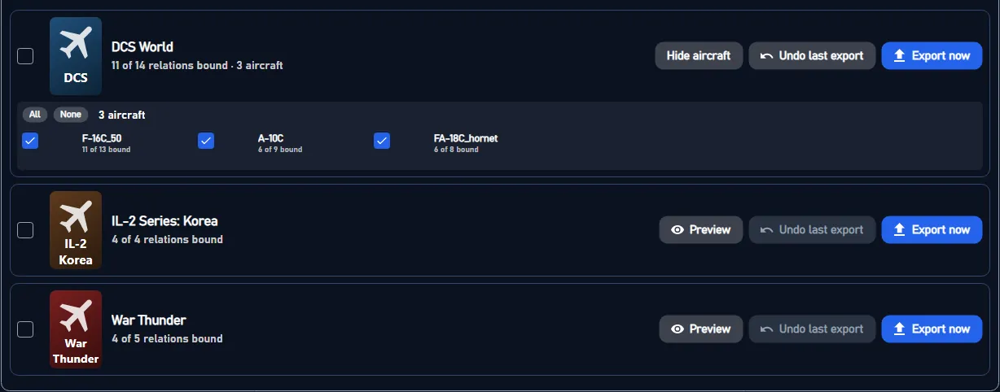

DCS 按飞机和设备分别保存控制设置：每个模组在你的摇杆上都有自己的绑定，而且 DCS 会给每个设备添加自己的默认绑定。JoyPro 会把这些文件读入一个配置文件，让你建立一次覆盖所有飞机的关联（F-16C、F/A-18C 和 A-10C II 中的“Gear”），然后把它们写回每架飞机的文件中。飞行时不会运行任何东西：DCS 一如既往地读取自己的文件。
DCS World 原生（使用游戏自己的绑定文件）
- 支持
- 原生（使用游戏自己的绑定文件）
- 引擎命令
engine dcs- 绑定文件
Saved Games\DCS\Config\Input\<aircraft>\joystick\<device>.diff.lua（Lua 差异文件）、键盘和 modifiers.lua；附带.jp文件- 游戏读取的输入
- 每个摇杆读取 128 个按钮、8 个轴、4 个苦力帽（有文档说明）
- 命令列表来源
- 安装目录中的输入 Lua 文件，由 DCS 自带的
luae.exe执行（DCS 保持关闭） - 游戏内测试
- 通过 56/56 个步骤（2026-10-11）
- ✓ 导入
- ✓ 导出
- ✓ 键盘绑定
- ✓ 修饰键
- ✓ 在你的电脑上生成命令列表
- ✓ 游戏监视器
- ✓ 轴曲线和死区
- ✗ 游戏控制设置DCS 按设备和飞机分别保存力反馈设置（FF Tune），见游戏内力反馈；没有需要管理的全局操控设置。
- ✓ 游戏内力反馈设置
- ✓ 基于遥测数据的力反馈
- ✓ 遥测录制
- ✓ 虚拟摇杆（vJoy）
- ◐ 虚拟 Xbox 手柄
- ✓ 虚拟功能
- ✓ 设置向导 / 自动分配
- ✓ 座舱
- ✓ 速查表
- ✓ 游戏内测试
摘自支持矩阵（根据引擎代码生成）： 所有游戏.
#3 步上手
- 全部帮我设置好
在开始页面 - 使用这些按钮
先查看列表 - 写入我的游戏
保持 DCS 关闭
之前：如果开始页面上的 DCS 卡片要求生成命令列表，请先按 生成列表。
然后：启动 DCS。你的绑定按飞机分别位于 Options > Controls 中。
你以前在 DCS 中绑定过按钮吗？那么开始页面会提供 导入，然后填补空缺。你的绑定会保留，只有空闲的按钮会获得新功能。参见 快速入门：让我的摇杆能用。
#功能放在哪里？
设置时会问一个重要问题，用滑块来回答。这在 DCS 中最重要，因为你会驾驶许多不同的飞机。
| 左端 | 右端 |
|---|---|
| 每架飞机同一件事用同一按钮 | 按真实飞机的位置 |
| 起落架在每架飞机上都是同一个按钮。容易记住。 | 每个按钮的作用与真实摇杆上该位置按钮的作用相同。 |
快速设置会使用你上一次的选择（第一次时为中间位置）。机炮和油门永远不会变动。参见 功能应该放在哪里？。
#没有头部追踪时环顾四周
没有 TrackIR，也没有 VR？设置会把环顾四周放到你摇杆的一个苦力帽上：前、后、左、右。油门上的拇指摇杆可以分配视角轴。参见 头部追踪和环顾四周。
设置时会先问一个问题：你使用头部追踪或 VR 吗？ 是（头部追踪、面部追踪、Tobii 或 VR，或者你打算购买一个）：你的设备上不放视角按钮，只放“视角回中”。否：环顾四周会在你摇杆的苦力帽上获得一个好位置。
#膝板上的绑定
DCS 可以在膝板上为每架飞机显示一页。JoyPro 会把你的按钮列表放到那里：打开 布局，按 速查表，然后按 放到膝板上。在座舱中打开膝板：你的那一页就在那里。参见 在 DCS 膝板上查看我的绑定。
#JoyPro 为 DCS 做了什么
- 导入：每架飞机在你的摇杆、油门和脚舵上的绑定会连同你的修饰键和轴设置一起进入你的配置文件。默认情况下，在你的设备上生效的 DCS 默认绑定也会一起导入，这样再次导出时不会丢失任何内容。
- 关联：一个关联就是所有飞机中的同一个功能。“Weapon release”可以是 F-16C 和 A-10C II 中的投弹按钮，对应你摇杆上的一个按钮。
- 导出：JoyPro 会写入每架勾选飞机的文件。之后 DCS 会在 Options > Controls 中显示你的绑定。
#导入你的 DCS 绑定
- 打开 开始 页面。DCS 卡片会显示游戏的图片。如果卡片要求生成命令列表，请先按 生成列表：JoyPro 会用 DCS 自己的 Lua 读取每个已安装的模组（DCS 保持关闭；需要几秒到一分钟）。
- 在 DCS 卡片上按 导入。保持勾选 我的所有 DCS 飞机，或者取消勾选后选择你驾驶的飞机。
- 按 立即导入。查看我的关联 会打开导入的内容。


#建立并检查关联
在 关联 页面上，一个关联会按飞机列出它的操作。用飞机筛选器查看单个模组，并用 关联流程 把多架飞机的操作合并到一个关联中。然后在导出页面按 检查：它会在 DCS 之前找出在同一架飞机中做两件事的按钮。
#导出到 DCS
- 关闭 DCS。 DCS 运行时 JoyPro 拒绝写入，因为 DCS 会在退出时写入自己的文件。
- 打开 导出。在 DCS 卡片上，飞机... 会列出你配置文件中的每一架飞机：只有勾选的飞机会被写入，其他飞机的文件完全保持原样。
- 如果你是在 JoyPro 中设置摇杆的，请保持第一个选项 在我的设备上替换 并勾选 同时清除我的其他设备。在 DCS 卡片上按 立即导出。



启动 DCS 并打开 Options > Controls，然后在顶部选择飞机。你的绑定位于你的设备那一列中，使用 DCS 自己的命令名称；JoyPro 删除的 DCS 默认绑定显示为空单元格；你的修饰键在 DCS 的修饰键列表中。轴曲线显示在该轴的 Axis Tune 中。你没有勾选的其他飞机看起来和以前一样。
#在 DCS 中需要你自己做的事
- 绑定方面不需要做别的事。如果你使用另一个 Saved Games 文件夹（例如
Saved Games\DCS.openbeta），请在 设置 > 游戏 的 控制设置保存在 中设置一次。 - 为了让 HUD 识别飞机以及实现基于遥测数据的力反馈，JoyPro 会向 DCS 安装一个小脚本，只需一次（参见“高级”）；这也需要关闭 DCS。
#常见问题
- “DCS 正在运行”：关闭 DCS（包括启动器的后台进程），然后重新导出。
- 某架飞机保留了旧绑定：它没有在 DCS 卡片的 飞机... 中被勾选，或者配置文件中没有它的关联。
- 某个摇杆上有你从未设置过的绑定：这些是 DCS 在 JoyPro 没有写入的设备上的默认绑定。勾选 同时清除我的其他设备，或者参见下面的 默认绑定。
- 两个相同的设备：DCS 通过实例 ID 区分它们；请保持 将同名设备视为同一设备 开启，这样 Windows 分配了新 ID 的设备仍会被当作同一个设备读取。
- DCS 显示的某个命令“不在它的列表中”：这是模组添加的（例如 Input Command Injector 配合社区按键绑定包）。当开始页面提示 你的 DCS 模组更改了控制列表；请重新生成命令列表 时，在上面按一次 刷新 DB：JoyPro 会像 DCS 一样读取模组的命令。在此之前 JoyPro 在你的 DCS 绑定文件中找到的命令已经是已知的，并标记为 来自你的 DCS 文件。
#JoyPro 读取和写入的文件
| 文件 | 这是什么 |
|---|---|
%USERPROFILE%\Saved Games\DCS\Config\Input\<aircraft>\joystick\<device>.diff.lua |
你在一架飞机中某个设备上的绑定，以与 DCS 默认值的差异形式保存（keyDiffs、带 added / removed 的 axisDiffs、ffDiffs） |
...\<aircraft>\joystick\<device>.jp |
JoyPro 的副本，带有关联名称和分组，下次导入时会读回 |
...\<aircraft>\keyboard\Keyboard.diff.lua |
键盘（仅当你导出键盘绑定时） |
...\<aircraft>\modifiers.lua |
该飞机的修饰键 |
<aircraft> 是模块声明的输入配置名称（例如 F-16C_50、FA-18C_hornet）。其他 Saved Games 文件夹（DCS.openbeta）在 设置 > 游戏 中设置。文件写入时不带字节顺序标记（BOM），因为 DCS 的 Lua 无法加载带 BOM 的文件。
#来自模组的命令
有些模组会向 DCS 的控制列表添加命令：
- Input Command Injector（作者 Quaggles，通常与社区按键绑定包一起使用）：额外的命令位于
Saved Games\DCS\InputCommands\<module>\Input\<profile>\joystick\default.lua（以及keyboard）中，DCS 安装目录中的注入器（Scripts\Hooks）会在 DCS 加载控制设置时把它们并入模块自己的列表。 Saved Games\DCS\Mods\aircraft中的模块：它们自带命令列表。
JoyPro 的命令列表（生成列表 / 刷新 DB）以与 DCS 相同的方式读取它们：从你的 DCS 安装实际使用的 Saved Games 文件夹读取（OpenBeta 安装为 DCS.openbeta），安装了注入器时并入注入器的命令，并使用与 DCS 相同的命令 id。当你的模组发生变化时，开始页面会显示 你的 DCS 模组更改了控制列表；请重新生成命令列表；按一次 刷新 DB 就能获得新命令。
如果某个命令在你的 DCS 绑定文件中，但还不在命令列表里（例如在生成列表后才添加的模组），JoyPro 仍然认识它：JoyPro 从文件中获取它的确切 id 和名称，在关联页面上将其标记为 来自你的 DCS 文件，并且开始页面会建议重新生成。
| 文件 | 这是什么 |
|---|---|
Saved Games\DCS\InputCommands\... |
Input Command Injector 的额外命令（只读） |
<data>\GameData\DcsCommandsFromYourFiles.tsv |
在你的 DCS 绑定文件中找到、但命令列表中缺少的命令 |
#DCS 中的导出模式
每种模式都基于设备文件在 DCS 中 生效 的绑定：设备的默认值，减去文件移除的，加上文件添加的。然后 JoyPro 只写入与默认值的真正差异，就像 DCS 自己会做的那样。
| 模式 | 导出的飞机中会发生什么 |
|---|---|
| 仅添加 | 不会移除任何内容。如果某个绑定的按钮已被 DCS 用于另一个命令（包括 DCS 默认值），该绑定不会被写入，并标记为“未写入游戏”。 |
| 更新，保留游戏的绑定 | 写入你的绑定；DCS 的默认值和你在游戏内的绑定保留，但你使用的按钮上属于另一个命令的绑定除外。 |
| 更新，以我的配置文件为准 | 同上，此外，你绑定的每个命令都会失去它在该飞机中的其他按钮（在每个设备文件上，以及没有文件的已连接设备上；DCS 默认值也算在内）。 |
| 在我的设备上替换 | 你写入的设备在导出的飞机中只获得你的绑定，DCS 默认值被移除。 |
| + 同时清除我的其他设备 | 在该飞机中没有绑定的已连接设备会失去那里的所有绑定，包括 DCS 默认值。 |
导出页面上的选项（在 选项和路径（供专家使用） 下）：
- 保留键盘默认设置（开启）：不写入键盘文件。关闭：写入你的键盘绑定，只移除被它们占用的 DCS 默认按键；其他所有默认按键保留。
- 我的设备在其他所有飞机中也失去 DCS 默认绑定（关闭）：使用替换时，已写入的设备在你没有导出的每架已安装飞机中也会被清空。输入层（UI 层、相机、通用）永远不会被改动。


#绝不会改动的内容
- 未连接的设备会逐字节保留它们的文件。
- 导入时忽略的设备，以及 JoyPro 转发到的 vJoy 设备，永远不会被清除。
- 在任何模式下，键盘都不会被清除或接管；鼠标绑定永远不会被写入。
- 你没有勾选的飞机，以及输入层（UI 层、相机、通用层）会保留它们的文件。
- 被清空的设备文件中的力反馈设置（
ffDiffs）会保留。
#默认绑定
DCS 为每架飞机中的每种设备类型提供各自的默认值（Warthog 摇杆的默认值与普通摇杆不同）。JoyPro 通过 干净配置文件 了解这些默认值，这些文件是它用命令列表从你的 DCS 生成的：每架飞机和每种设备类型一个。替换和同时清除会从它们写入的设备上准确移除这些默认值。
对于 JoyPro 不写入的设备，设置 > DCS：默认绑定 提供两项对 DCS 安装本身的更改，除非你打开，否则都是关闭的：从每个摇杆文件中去除默认值（每个原始文件保存为 <file>.nocombo.bak），或者把 DCS 针对特定设备的默认文件移到 JoyPro 的备份文件夹。在强制完整性检查的服务器上，修改过的文件无法通过检查；还原 DCS 文件 会把所有原始文件放回去。DCS 更新后，JoyPro 会在启动时再次应用已打开的选项。
设备文件只保存与 DCS 默认值的差异：在 DCS 中生效的 = 默认值，减去文件移除的，加上文件添加的。每种导出模式决定哪些绑定应当生效；然后 JoyPro 只写入差异。一架飞机中的例子：
| 在飞机中 | 设备文件得到什么 |
|---|---|
| 你保留的 DCS 默认绑定 | 什么都没有：它本来就是默认值（只列在 .jp 中） |
| 你不想要的 DCS 默认绑定 | 一条 “removed” 行 |
| 你自己的、不是默认值的绑定 | 一条 “added” 行 |
| 调校不同（曲线、反转）的默认绑定 | 一条 “changed” 行 |
#飞机、曲线、力反馈
- 按飞机：每个关联都为每架飞机保留各自的操作；导出只写入勾选的飞机。
- 轴曲线：死区、X 和 Y 饱和度、曲率或 11 点用户曲线、反转和滑块，按飞机写成 DCS 自己的过滤器（即 Axis Tune 中显示的内容）。默认曲线 对所有游戏有效；也可以为 DCS 或某一架飞机单独设置曲线（绑定 > 轴响应）。
- 游戏内力反馈：设置 > DCS 力反馈 可以按设备设置交换轴、反转 X 和反转 Y（
engine dcs ffb set）。基于遥测数据的力反馈：力反馈 页面会安装 JoyPro 的挂钩Saved Games\DCS\Scripts\Hooks\JoyProFfb.lua（DCS 必须关闭；SRS 或 Tacview 等其他脚本照常工作）。 - HUD：安装 DCS 挂钩后，HUD 会显示你正在驾驶的飞机的绑定（HUD 页面 > 安装 DCS 挂钩：一个小 Lua 文件，加上
Export.lua中一行带保护的代码，事先会备份），也可以手动选择飞机。 - 监视器：你在 DCS 的 Options > Controls 中更改的绑定会在 DCS 关闭后被发现；JoyPro 会询问是否采用这些更改。只比较文件发生变化的飞机，以设备的默认值加上它的差异为基准。
#DCS 集成的内部原理
flowchart LR
P["你的配置文件"] --> E["engine dcs export"]
C[("干净配置文件<br/>（DCS 默认值）")] --> E
E --> D["device.diff.lua<br/>+ .jp"]
E --> M["modifiers.lua"]
D --> G["DCS：Options ><br/>Controls"]
L["布局：放到<br/>膝板上"] --> K["膝板<br/>页面"]
代码：engine\EngineDcsImport.cs、engine\EngineDcsExport.cs、engine\EngineDcsExport.Modes.cs、engine\EngineDcsRefresh.cs、engine\DcsDeviceNames.cs、engine\DcsCommandNames.cs、engine\EngineDcsDefaultsStrip.cs。
- 设备名称：DCS 把摇杆命名为
<DirectInput instance name> {<instance GUID>}，实例名称与 DirectInput 报告的完全一致，包括首尾的空格。JoyPro 自己的名称会去掉这些空格；DcsDeviceNames负责双向转换。导出时，文件按已连接设备的原始名称命名；对于未连接的设备，按已有文件命名；否则按 JoyPro 的名称命名。旧版 JoyPro 用去掉空格的名称写入的文件，会在没有 DCS 命名的文件时被读取，并在写入后被删除（已备份）。 - 命令列表：
engine dcs refresh id在 DCS 自己的bin\luae.exe中运行每个模块的输入 Lua（没有游戏窗口），同时进行多次运行；英文命令名称来自安装目录中的l10n\en\LC_MESSAGES\input.mo，无论 DCS 使用哪种语言。engine dcs refresh clean生成干净配置文件：使用 DCS 自己的InputData.clearProfile，为每种设备类型配一个模拟摇杆，写入一个临时的 Saved Games 文件夹（你的Config\Input永远不会被更改）。文件：%LOCALAPPDATA%\JoyPro2\GameData\CleanProfile\DCS\<aircraft>.cf、...\<aircraft>\<device type>.cf、KeyboardCleanProfile\DCS\<aircraft>.cf。 - 导入：
engine dcs import（--planes、--only-connected、--merge-same-name、--include-defaults、--include-keyboard，以及各个--import-*调校开关）；engine dcs scan显示相同的内容，但不更改配置文件。 - 导出：
engine dcs export--mode clean|add|merge|merge-overwrite --nuke-untouched-devices true|false --keep-keyboard-defaults true|false --clean-all-aircraft true|false --planes <csv> --ignore-device <d>；--clear-keyboard-defaults true（仅限命令行）还会移除已写入飞机的其他所有 DCS 默认按键。备份：首次写入前，每个文件都会备份为<file>.jpbak并存入%LOCALAPPDATA%\JoyPro2\GameBackups。 - 检查：
engine dcs verify-clean让 DCS 自己的 Lua 列出你的摇杆上仍然生效的每个默认绑定（只读；--include-disconnected使用模拟摇杆，--dump-active用于比较导出前后）。 - 安装目录中的默认绑定：
engine dcs strip-defaults（apply|restore|status|auto，标记行-- [[DCS_STRIP_JOYSTICK_DEFAULTS v1]]，原始文件保存为.nocombo.bak，每个修改过的文件都要先通过 DCS 加载器加载才算数）和engine dcs device-luas（list|remove|restore；文件连同清单移到<data>\DcsDefaults\DeviceLuas）。DCS 或其更新程序运行时，两者都会拒绝执行。 - 力反馈：
engine dcs ffb list、engine dcs ffb set、engine dcs ffb clear。 - HUD 挂钩：
engine overlay dcs-hook status（install/remove）：DCS 把单位类型发送到127.0.0.1:1992。
#已知限制
- 只有已安装的模块才会获得命令列表和干净配置文件。
- 如果你为某个设备运行过 DCS 的轴向导，该设备会把向导的分配作为默认值保留（
wizard.lua，按设备实例）；JoyPro 不会更改它。 - DCS 在飞机之间共用的输入层（General、UI 层、Combined Arms）不会被写入。
- 测试：
engine\tests\smoke\dcsexportmodes.ps1（每种模式、往返、逐字节撤销）、smoke\dcskeyboard.ps1、smoke\dcsdefaults.ps1；游戏内测试tools\e2e\games\DCS.ps1和DCSCurves.ps1。
关于此游戏的所有技术说明（根据代码仓库生成）： dcs.md.